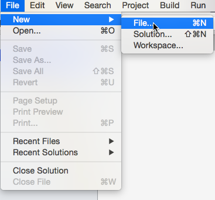

Duration
15 minutes
Lab goals
In this exercise you will define a new Calculator class with some simple methods to perform arithmetic operations. You will then use the class with an existing program that has been created for you to read two numeric values and a math operation from the console and print the result of the selected operation applied to the two values.
The high-level goals for the exercise are listed below:
- Create a
Calculatorclass. - Define methods to perform addition, subtraction, multiplication and division on two floating point values.
- Modify the existing
Programclass which has been defined to create an instance (object) of yourCalculator. - Call the appropriate math operation on the
Calculator, passing it the two floating point values read from the console. - Display the result of the operation by reading a field defined on the
Calculatorclass.
Below is output from the finished application showing sample data from two different
Calculator objects.
Required assets
There are two C# projects in the Lab 01 Resources folder, one is the starting solution you will begin with, and the second is a completed version of the program you can refer to at the end of the exercise to check your work. Please make sure you have this folder before you begin.
Steps
Here are step-by-step instructions for completing this exericise. You can also utilize the high-level goals defined above to work through the code, relying on the below instructions to fill in any necessary details.
Open the starter project
- Locate the starter project contained in the Exercise 1/Start folder included with this exercise and open the Calculator.sln file using either Visual Studio or Visual Studio.
- Examine the Program.cs file which is already present in the project. Notice that it defines your main entry point (
Main) as a method in a class namedProgram. This is the place your program will begin execution. It currently performs the following steps:- Prompts the user, using the
Console, for two numbers. - Enters an infinite (never-ending)
whileloop which reads an operation to add, subtract, multiply, divide or 'Q' for quit. - Has an
ifstatement to check for 'Q' to exit the loop using abreakstatement (remember, this terminates the loop or switch statement being executed). - Uses a
switchstatement to evaluate the first letter of the input (upper-cased), with placeholder comments for where you will use yourCalculatorclass. - Has a placeholder comment to output the result of the operation.
- Prompts the user, using the
- Identify all the
// TODO:comments in the code - this is where you will make your changes to this class. Make sure you understand the basic operation of this program before continuing.
Create a Calculator class
In this section, you will define a class named Calculator which will be used to perform mathmatical operations (Add, Subtract, Multiply and Divide).
- The first step is to add a new class file into the project. You can just add a simple text file with the proper extension (.cs), however a better way is to let the IDE know what you want to add through the New File dialog which displays a set of common file types to create. You access this dialog using the File > New > File menu option. 
- In the New File dialog, choose the Empty Class entry from the General category, enter Calculator as the Name, then click the New button (see below). Visual Studio will generate an empty file named Calculator.cs for you.
- Examine the code which has been created for you. You should have a new public class named Calculator in the project namespace (which is also Calculator - this was defined when we created the initial project and matches the name of the project itself). The code should look something like:
-
There is one part you may not recognize - that's the odd-looking method defined in the class:
public class Calculator { public Calculator() { } }This is a special method called a constructor which can be used to perform initialization when an instance of the class is created. We are going to talk about these in a future module and we don't need this, so you can delete the definition from your code (the highlighted bits above).
using System;
namespace Calculator
{
public class Calculator
{
public Calculator()
{
}
}
}
Define methods to perform arithmetic operations
Next, let's define some public methods on the calculator class to perform simple arithmetic calculations on two floating point numbers. We want to have methods to Add, Subtract, Multiply and Divide.
-
Let's start with Add. Define a method named
Addthat takes twofloatparameters, you can name them whatever you like, and returns nothing (hint:void). -
Next, let's provide some code for the method. Create a public field named Answer of type
floatin the class to hold our calculation result, place this code into the class portion, not into theAddmethod. -
Finally, assign the
Answerfield to the added value of your two numbers, remember we use the + symbol to add things in C#. - Build the application (Build > Build All (or Solution) on the menu) to make sure it compiles correctly, correct any errors that are reported by comparing your code against the above example.
-
Now, complete the other three operators in the same way using three methods:
Subtract,MultiplyandDivide.- All three methods should take two
floatparameters and returnvoid. - Assign the result of the operation to the
Answerfield. - For an extra challenge, the
Dividemethod should make sure the second number (the divisor) is not zero using anifstatement, if you find a zero, set theAnswerfield to -1 to indicate an error.
- All three methods should take two
...
public class Calculator
{
public void Add(float number1, float number2)
{
}
}
...
public class Calculator
{
public float Answer;
public void Add(float number1, float number2)
{
}
}
...
public class Calculator
{
public float Answer;
public void Add(float number1, float number2)
{
Answer = number1 + number2;
}
}
- Make sure to build the application before moving to the next step (Build > Build All (or Solution) on the menu) to make sure it compiles correctly, correct any errors that are reported by comparing your code against the above example.
Modify the existing Program class to use the Calculator
Now it's time to use our new Calculator class. Let's modify the supplied Main method defined in the Program class.
- Open the Program.cs file (double-click on the file in the Solution Explorer).
- Recall the
// TODO:comments you looked at earlier - using these as a guide, perform the steps indicated:- Create a
Calculatorobject usingnew. - Perform each operation (add, subtract, multiply and divide) using the
Calculatorobject. - Output the result (
Answer) field from theCalculatorusingConsole.WriteLine. Remember, we use placeholders to indicate where we want parameters to be inserted, so you could use the string"Your answer is {0}"to reproduce the output shown in the initial screen shot at the start of the exercise. Make sure to pass theAnswerfield!
- Create a
Summary
In this lab exercise, you created a new Calculator class and used it to display the results of various math operations. In the next exercise, we will continue editing this calculator class by supporting another math operation - modulo division.